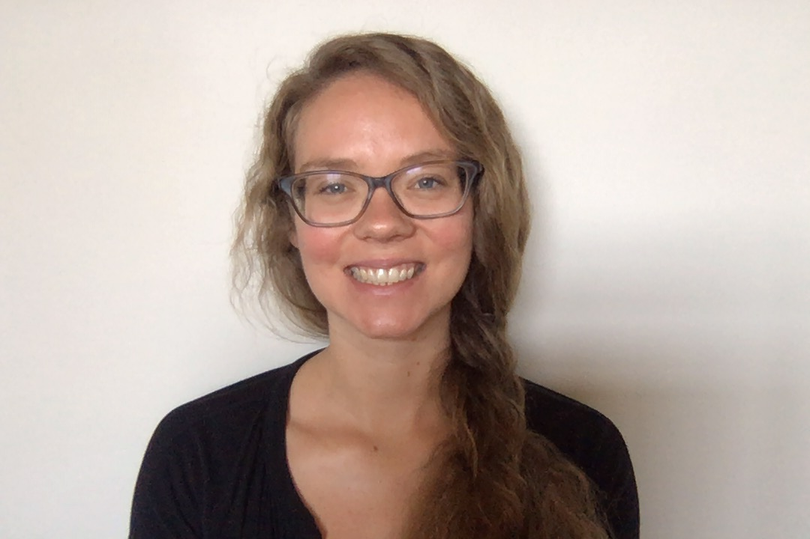

Lisa Bauer
Applied Scientist at Amazon Alexa
|
I'm an Applied Scientist at Amazon Alexa working on Fairness in NLP. I received my PhD in Computer Science from UNC Chapel Hill in 2022, advised by Prof. Mohit Bansal in the UNC-NLP Research Group.
Here is my CV.
Analyzing the Limits of Self-Supervision in Handling Bias in Language
Lisa Bauer, Karthik Gopalakrishnan, Spandana Gella, Yang Liu, Mohit Bansal, Dilek Hakkani-Tur
Findings of EMNLP 2022
[pdf]
Disentangling Online Chats with DAG-structured LSTMs
Duccio Pappadopulo*, Lisa Bauer*, Marco Farina, Ozan İrsoy and Mohit Bansal
Proceedings of the 10th Joint Conference on Lexical and Computational Semantics (*SEM), 2021
[pdf]
ExplaGraphs: An Explanation Graph Generation Task for Structured Commonsense Reasoning
Swarnadeep Saha, Prateek Yadav, Lisa Bauer, and Mohit Bansal
Proceedings of EMNLP 2021
[pdf], [data/code]
ERNIE-NLI: Analyzing the Impact of Domain-Specific External Knowledge on Enhanced Representations for NLI
Lisa Bauer, Lingjia Deng, Mohit Bansal
Proceedings of the Deep Learning Inside Out (DeeLIO) Workshop, NAACL-HLT 2021
[pdf]
Identify, Align, and Integrate: Matching Knowledge Graphs to Commonsense Reasoning Tasks (Oral)
Lisa Bauer, Mohit Bansal
Proceedings of EACL 2021
[pdf], [code], [slides], [talk]
Simple Compounded-Label Training for Fact Extraction and Verification (Oral)
Yixin Nie*, Lisa Bauer*, Mohit Bansal
Proceedings of the Third Workshop on Fact Extraction and VERification (FEVER) 2020
[pdf], [slides], [talk]
Commonsense for Generative Multi-Hop Question Answering Tasks (Oral)
Lisa Bauer*, Yicheng Wang*, Mohit Bansal
Proceedings of EMNLP 2018, Brussels, Belgium
[pdf], [code], [slides], [talk]
Automatic Classification of Humpback Whale Social Calls
Irina Tolkova* and Lisa Bauer*, Antonella Wilby, Ryan Kastner, Kerri D. Seger, Aaron M. Thode
Acoustical Society of America Conference, Boston, MA. June 24-29, 2017
http://asa.scitation.org/doi/abs/10.1121/1.4987715
[pdf]
[Also presented this work to researchers at San Diego Zoo’s Institute for Conservation Research, Qualcomm Research, Scripps Institution of Oceanography and GoPro.]